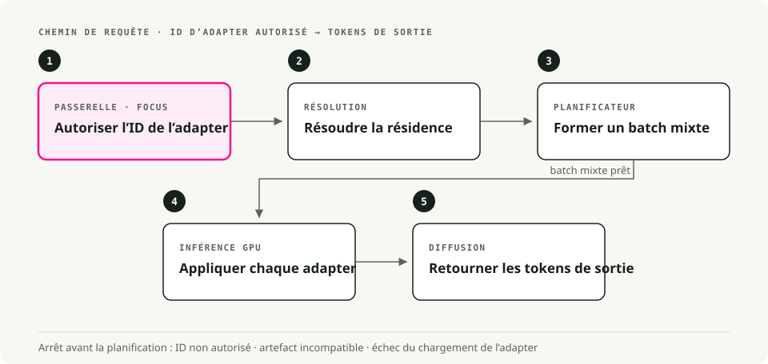
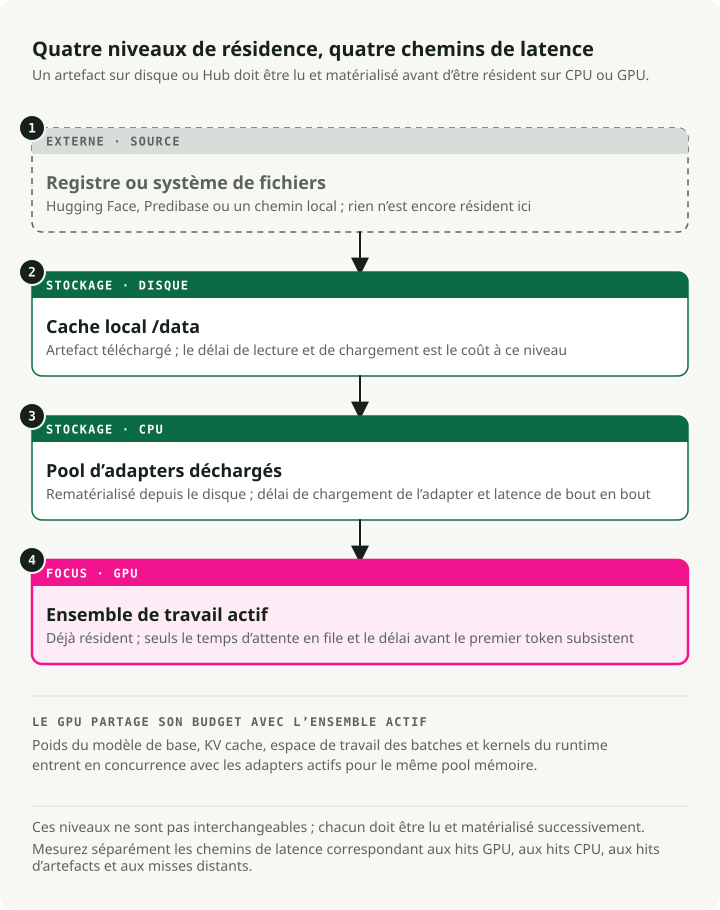

Traduction automatique
Cet article a été traduit automatiquement depuis la version originale en anglais.
Guide de déploiement LoRAX : des milliers d’adaptateurs LoRA sur Kubernetes
Servir des dizaines de grands modèles de langage fine-tunés signifiait autrefois un GPU par modèle. LoRAX (LoRA eXchange) conserve un seul modèle de base en mémoire et remplace à chaud des adaptateurs LoRA légers à chaque requête. Le coût par token reste globalement stable à mesure que vous ajoutez des fine-tunings.
Ce guide explique ce qu’est LoRA, quand choisir LoRAX plutôt que vLLM, comment le déployer sur Kubernetes avec le chart Helm officiel, et comment appeler les API REST, Python et compatibles OpenAI.
Contexte : qu’est-ce que LoRA ?
Low-Rank Adaptation (LoRA) fige les poids du modèle pré-entraîné et injecte de petites matrices de décomposition de rang dans chaque couche Transformer. Au lieu de réentraîner tout le modèle, vous entraînez un petit ensemble de « diffs » qui capturent le nouveau comportement.
Un fine-tuning complet d’un modèle 7B produit un fichier de plus de 20 Go. Un adaptateur LoRA pour ce même modèle pèse environ 100 Mo. C’est cette différence qui rend le serving dynamique possible : vous pouvez conserver des milliers d’adaptateurs sur disque et en charger un en mémoire GPU en quelques millisecondes.
Le problème que résout LoRAX
Le serving multi-modèle de façon traditionnelle coûte cher. Chaque modèle fine-tuné a besoin de sa propre mémoire GPU, donc servir 50 modèles spécifiques à des clients demande 50 déploiements, ou au minimum 50× la mémoire. Le coût augmente linéairement avec chaque nouvelle variante.
LoRAX est un projet Apache 2.0 de Predibase. Il étend le serveur Text Generation Inference de Hugging Face avec le chargement dynamique des adaptateurs, un cache de poids à plusieurs niveaux et le batching multi-adaptateur. Ensemble, ces mécanismes permettent de servir des centaines d’adaptateurs LoRA spécifiques à des tenants sur un seul GPU de classe Ampere sans perdre en débit ni en latence.
L’astuce : le fine-tuning LoRA produit de petits poids delta plutôt que des copies complètes du modèle. LoRAX garde uniquement le modèle de base résident sur le GPU et injecte les poids de l’adaptateur à la demande. Les adaptateurs non utilisés ne consomment rien en VRAM.
Fonctionnement
Chargement dynamique des adaptateurs
Les poids des adaptateurs sont injectés juste à temps pour chaque requête. Le modèle de base reste résident dans la mémoire GPU tandis que les adaptateurs se chargent à la volée sans bloquer les autres requêtes. Vous pouvez cataloguer des milliers d’adaptateurs tout en ne payant le coût mémoire que pour ceux qui servent activement du trafic.
Cache de poids à plusieurs niveaux
LoRAX répartit les adaptateurs sur trois couches : la VRAM GPU pour les adaptateurs chauds, la RAM CPU pour les adaptateurs tièdes, et le disque pour le stockage froid. Cette hiérarchie évite les erreurs out-of-memory et maintient des temps de swap suffisamment rapides pour que les utilisateurs ne s’en aperçoivent pas.
Batching continu multi-adaptateur
C’est là que LoRAX change le comportement du batching. Il étend le continuous batching pour fonctionner en parallèle sur différents adaptateurs, de sorte que des requêtes ciblant des fine-tunings différents puissent partager le même forward pass. Les benchmarks de Predibase montrent que traiter 1M de tokens répartis sur 32 adaptateurs différents prend à peu près le même temps que 1M de tokens sur un seul modèle.
TGI en dessous
LoRAX s’appuie sur Text Generation Inference (TGI) de Hugging Face, donc vous héritez des optimisations de TGI : FlashAttention 2, paged attention, kernels SGMV pour l’inférence multi-adaptateur et réponses en streaming. C’est TGI plus le basculement dynamique d’adaptateurs.
Le coût par token reste globalement stable
Le graphique illustre bien le point. Les déploiements dédiés (gris foncé) évoluent linéairement : doublez le nombre de modèles, doublez le coût. LoRAX (orange) maintient un coût par token presque stable à mesure que vous ajoutez des adaptateurs. Même les fine-tunings en API hébergée de fournisseurs comme OpenAI (gris clair) ne rivalisent pas sur des charges multi-modèles.

Coût par million de tokens à mesure que vous servez davantage de modèles fine-tunés. LoRAX reste presque stable grâce au batching multi-adaptateur ; les déploiements dédiés évoluent linéairement. Source : LoRAX GitHub.
Flux de requête

Quand utiliser LoRAX
LoRAX est pertinent dans quelques situations précises.
- SaaS multi-tenant. Vous construisez une plateforme où chacun de 500 clients obtient un chatbot fine-tuné sur ses données. L’approche traditionnelle demande 500 déploiements de modèles. LoRAX sert les 500 depuis un seul GPU en chargeant l’adaptateur pertinent quand une requête client arrive.
- Routage vers des experts par domaine. Vous maintenez des LLM spécialisés pour le droit, la médecine, la finance et l’ingénierie. Au lieu de quatre déploiements 13B distincts, LoRAX exécute un seul LLaMA 2 13B de base et route vers le bon adaptateur selon le domaine de la requête.
- Expérimentation rapide. Vous testez 10 approches de fine-tuning en production ? Déployez LoRAX une fois et basculez entre les variantes en changeant le paramètre
adapter_id. Aucun changement d’infrastructure ni redémarrage de service. - Déploiements contraints en ressources ou en edge. Un seul NVIDIA A10G peut héberger un modèle de base 7B quantifié plus des dizaines d’adaptateurs spécifiques à des tâches, au lieu d’un GPU par modèle.
Architecture : hiérarchie mémoire et planification des requêtes
LoRAX repose sur une hiérarchie mémoire à trois niveaux. La comprendre vous aide à prévoir les performances et à dimensionner la capacité.

LoRAX traite chaque adaptateur comme une « vue » légère sur le modèle de base partagé. Le scheduler regroupe les requêtes de sorte que servir 32 adaptateurs différents puisse être aussi rapide que d’en servir un seul, même à un débit d’un million de tokens. Les adaptateurs pèsent généralement entre 10 et 200 Mo, contre plusieurs gigaoctets pour des modèles complets.
Déployer LoRAX sur Kubernetes
LoRAX fournit des charts Helm et des images Docker, donc le déploiement sur Kubernetes est simple.
Prérequis
Vous aurez besoin de :
- Un cluster Kubernetes avec des GPU NVIDIA (génération Ampere ou plus récente : A10, A100, H100)
- NVIDIA Container Runtime configuré sur les nœuds GPU
kubectlethelminstallés localement- Un stockage persistant pour les caches d’adaptateurs ; montez un PersistentVolume sur
/datadans le pod
Démarrage rapide avec le chart Helm officiel
Helm est le gestionnaire de paquets de Kubernetes. Il regroupe toutes les ressources Kubernetes dont une application a besoin (Deployments, Services, ConfigMaps, etc.) dans un seul « chart », ce qui permet de tout déployer avec une seule commande au lieu de gérer à la main des dizaines de fichiers YAML.
Predibase a retiré son dépôt Helm public fin 2024, donc le workflow pris en charge consiste à cloner le dépôt LoRAX et à installer le chart depuis le disque. Exécutez ces commandes depuis votre poste de travail :
# Clone the LoRAX repository and switch into it
git clone https://github.com/predibase/lorax.git
cd lorax
# Make sure kubectl can talk to your cluster
kubectl config current-context
kubectl get nodes
# Build chart dependencies (generates charts/lorax/charts/*.tgz)
helm dependency update charts/lorax
# Optional: render manifests locally to verify everything is templating
helm template mistral-7b-release charts/lorax > /tmp/lorax-rendered.yaml
# Deploy with default settings (Mistral-7B-Instruct)
helm upgrade --install mistral-7b-release charts/lorax
# Watch the pod come up
kubectl get pods -w
# Check logs to see model loading progress
kubectl logs -f deploy/mistral-7b-release-lorax
Le chart crée un Deployment (un replica par défaut) et un Service ClusterIP écoutant sur le port 80. Au premier démarrage, le modèle de base est téléchargé depuis Hugging Face puis chargé en mémoire GPU, ce qui peut prendre quelques minutes selon votre réseau et votre GPU. Les redémarrages suivants réutilisent les poids mis en cache depuis le volume persistant.
Astuce : Si
helm upgrade --installrenvoieKubernetes cluster unreachable, le contexte de votre kubeconfig pointe vers un cluster hors ligne. Démarrez votre cluster local (Docker Desktop, kind, minikube) ou basculez vers un contexte accessible aveckubectl config use-context. Exécuterkubectl get nodesavant le déploiement confirme que le serveur API est disponible.
Personnaliser le modèle de base et le scaling
Vous pouvez remplacer le modèle de base ou ajuster les ressources en créant un fichier de valeurs personnalisé. Voici un exemple de llama2-values.yaml :
# Use LLaMA 2 7B Chat instead of Mistral
modelId: meta-llama/Llama-2-7b-chat-hf
# Enable 4-bit quantization to save VRAM
modelArgs:
quantization: "bitsandbytes"
# Scale to 2 replicas for high availability
replicaCount: 2
# Request exactly 1 GPU per pod
resources:
limits:
nvidia.com/gpu: 1
Déployez avec votre configuration personnalisée :
helm upgrade --install -f llama2-values.yaml llama2-chat-release charts/lorax
Exécutez ces commandes depuis le dépôt cloné lorax/ pour que Helm puisse localiser le répertoire du chart.
LoRAX prend en charge les modèles open source populaires prêts à l’emploi : LLaMA 2, CodeLlama, Mistral, Mixtral, Qwen et d’autres. Consultez la liste de compatibilité des modèles pour les derniers ajouts.
Exposer le service
Le type de Service par défaut est ClusterIP, ce qui n’autorise l’accès que depuis l’intérieur du cluster. Pour du trafic externe :
- Créez un Service LoadBalancer (chez les fournisseurs cloud)
- Configurez un Ingress avec terminaison TLS
- Placez une passerelle API devant pour l’authentification et le rate limiting
Nettoyage
Quand vous avez terminé vos tests, libérez les ressources GPU :
helm uninstall mistral-7b-release
Cela supprime le Deployment, le Service et tous les pods. Les poids de modèle mis en cache restent dans le PersistentVolume sauf si vous le supprimez séparément.
Utiliser les API LoRAX
Une fois déployé, LoRAX expose trois façons d’interagir avec lui : une API REST compatible avec Hugging Face TGI, une bibliothèque cliente Python et un endpoint compatible OpenAI. Les trois prennent en charge le basculement dynamique d’adaptateurs.
API REST
L’endpoint /generate accepte des payloads JSON avec votre prompt et des paramètres optionnels. Utilisation du modèle de base sans adaptateur :
# Basic request to the base model (no adapter)
curl -X POST http://localhost:8080/generate \
-H "Content-Type: application/json" \
-d '{
"inputs": "Write a short poem about the sea.",
"parameters": {
"max_new_tokens": 64,
"temperature": 0.7
}
}'
La réponse inclut le texte généré et des métadonnées comme le nombre de tokens et les temps.
Charger un adaptateur spécifique
Ajoutez un paramètre adapter_id pour cibler un modèle fine-tuné. Voici un exemple avec un adaptateur spécialisé en mathématiques :
curl -X POST http://localhost:8080/generate \
-H "Content-Type: application/json" \
-d '{
"inputs": "Natalia sold 48 clips in April, and then half as many in May. How many clips did she sell in total?",
"parameters": {
"max_new_tokens": 64,
"adapter_id": "vineetsharma/qlora-adapter-Mistral-7B-Instruct-v0.1-gsm8k"
}
}'
Lors du premier appel avec un nouveau adapter_id, LoRAX télécharge l’adaptateur depuis Hugging Face Hub et le met en cache sous /data. Les requêtes suivantes utilisent la version en cache. Vous pouvez aussi charger des adaptateurs depuis des chemins locaux en définissant "adapter_source": "local" avec un chemin de fichier.
Client Python
Pour un accès programmatique, installez le package lorax-client :
pip install lorax-client
Le client encapsule l’API REST avec une interface propre :
from lorax import Client
# Connect to your LoRAX instance (default port 8080)
client = Client("http://localhost:8080")
prompt = "Explain the significance of the moon landing in 1969."
# 1. Generate using the base model (no adapter loaded)
base_response = client.generate(prompt, max_new_tokens=80)
print("Base model:", base_response.generated_text)
# 2. Generate using a fine-tuned adapter
# The adapter_id can be a Hugging Face repo ID or a local path
adapter_response = client.generate(
prompt,
max_new_tokens=80,
adapter_id="alignment-handbook/zephyr-7b-dpo-lora",
)
print("With adapter:", adapter_response.generated_text)
Le client prend en charge le streaming, les paramètres de décodage (temperature, top-p, repetition penalty), ainsi que les détails au niveau token. Voir la référence client pour les usages avancés.
Endpoint compatible OpenAI
LoRAX implémente l’API OpenAI Chat Completions sous le chemin /v1. Cela vous permet d’intégrer LoRAX dans des outils qui attendent le format d’API OpenAI : LangChain, Semantic Kernel ou des applications personnalisées.
Utilisez le champ model pour spécifier quel adaptateur charger :
import openai
# Point the OpenAI client at LoRAX
openai.api_key = "EMPTY" # LoRAX doesn't require an API key by default
openai.api_base = "http://localhost:8080/v1"
# The model parameter becomes the adapter_id
# This allows seamless integration with tools like LangChain
response = openai.ChatCompletion.create(
model="alignment-handbook/zephyr-7b-dpo-lora",
messages=[
{"role": "system", "content": "You are a friendly chatbot who speaks like a pirate."},
{"role": "user", "content": "How many parrots can a person own?"},
],
max_tokens=100,
)
print(response["choices"][0]["message"]["content"])
Deux cas d’usage pratiques en découlent :
- Remplacement direct. Migrez des applications existantes depuis les modèles hébergés d’OpenAI vers votre propre infrastructure en changeant une seule ligne de configuration.
- Intégration aux outils. Utilisez LoRAX avec n’importe quel framework qui prend déjà en charge l’API OpenAI, sans code d’adaptateur personnalisé.
La première requête vers un nouvel adaptateur présente une latence plus élevée pendant que LoRAX le télécharge et le charge. Tenez-en compte dans les applications orientées utilisateur en préchargeant les adaptateurs populaires ou en affichant un état de chargement.
Compromis
Ce que LoRAX fait bien
- Beaucoup de modèles sur un seul GPU. Des centaines ou des milliers de modèles fine-tunés sur un seul GPU au lieu d’un déploiement par modèle. Le coût reste presque constant à mesure que vous ajoutez des adaptateurs.
- Pas de mémoire idle. Les adaptateurs se chargent à la demande. Les modèles inutilisés ne coûtent rien en VRAM. Vous pouvez conserver un catalogue de plus de 1 000 modèles spécialisés et ne payer que pour la poignée qui sert activement du trafic.
- Le débit tient. Le continuous batching multi-adaptateur maintient latence et débit proches d’un serving mono-modèle. Les benchmarks de Predibase montrent que servir 32 adaptateurs en parallèle ajoute peu de surcoût par rapport à un seul.
- TGI en dessous. Construit sur Hugging Face TGI, donc vous héritez de FlashAttention 2, de la paged attention, du streaming et des kernels SGMV pour l’inférence multi-adaptateur.
- Complet côté opérations. Images Docker, charts Helm, métriques Prometheus, tracing OpenTelemetry. Apache 2.0, donc sans restrictions commerciales.
- Large support des modèles. Fonctionne avec LLaMA 2, CodeLlama, Mistral, Mixtral, Qwen et d’autres. Prend en charge la quantification (4-bit via bitsandbytes, GPTQ, AWQ) pour réduire l’empreinte mémoire.
Limites
- LoRA uniquement. Tous les adaptateurs doivent provenir d’un fine-tuning de type LoRA sur le même modèle de base. Les fine-tunings complets qui produisent des modèles autonomes ne fonctionneront pas sans conversion. Des architectures de base différentes nécessitent des déploiements LoRAX séparés.
- Cold start. La première requête après le démarrage charge le modèle de base en mémoire GPU (30 à 90 secondes pour les modèles plus grands). La première requête vers un nouvel adaptateur subit la latence de téléchargement depuis Hugging Face. Prévoyez cela avec des health checks et du préchargement.
- Thrashing du cache sous charge bursty. Si le trafic cible soudainement des dizaines d’adaptateurs différents, LoRAX doit déplacer les poids entre GPU, RAM CPU et disque. Les swaps d’adaptateurs depuis la RAM tournent autour de 10 ms, mais un très grand working set peut provoquer des ralentissements temporaires. Surveillez la mémoire GPU et les taux de hit du cache d’adaptateurs.
- Projet qui évolue vite. LoRAX a forké TGI fin 2023 et change rapidement. Attendez-vous à des mises à jour fréquentes et à des breaking changes occasionnels au fil de l’alignement sur TGI upstream. Épinglez les versions en production.
LoRAX vs. vLLM
vLLM est un autre moteur de serving à haut débit, qui a ajouté plus récemment le support multi-LoRA. Les deux résolvent des problèmes différents.
| Feature | LoRAX | vLLM |
|---|---|---|
| Primary focus | Échelle massive : des centaines ou des milliers d’adaptateurs | Haut débit : maximum de tokens/sec pour moins d’adaptateurs actifs |
| Architecture | Swapping dynamique ; décharge agressivement vers CPU/disque | Batching optimisé pour l’exécution concurrente d’adaptateurs actifs |
| Best for | SaaS long tail : des milliers de tenants, usage sporadique | Paliers à fort trafic : 5 à 10 adaptateurs fortement utilisés |
| Base | Hugging Face TGI | Moteur PagedAttention personnalisé |
Choisissez LoRAX si vous avez une longue traîne d’adaptateurs (un par utilisateur, la plupart inactifs la majorité du temps) où le cache à plusieurs niveaux apporte un gain. Choisissez vLLM si vous avez un petit ensemble d’adaptateurs très actifs et que le débit brut est la priorité.
Pour commencer
Voici une feuille de route pratique du prototype à la production :
1. Commencer petit
Déployez LoRAX avec le modèle de base que vous utilisez déjà et 3 à 5 adaptateurs représentatifs. Vérifiez que le chargement des adaptateurs fonctionne et mesurez la latence de référence pour votre charge.
2. Mesurer et profiler
- Suivez les taux de hit du cache d’adaptateurs et la mémoire GPU sous un trafic réaliste.
- Identifiez les adaptateurs chauds (les 20 % supérieurs en volume de requêtes) et envisagez de les précharger au démarrage.
- Mesurez la latence P50, P95 et P99 à la fois pour les chargements d’adaptateurs en cache et à froid.
3. Optimiser pour votre charge
- Si quelques adaptateurs sont très populaires, augmentez l’allocation mémoire GPU pour en garder davantage chauds.
- Si l’usage est en longue traîne sur des centaines d’adaptateurs, ajustez le cache à plusieurs niveaux pour équilibrer RAM et disque.
- Utilisez la quantification (4-bit bitsandbytes ou GPTQ) si la VRAM est limitée.
4. Passer à l’échelle horizontalement
Une fois le comportement d’une instance unique compris, ajoutez des replicas pour la haute disponibilité. Placez un load balancer devant qui route selon adapter_id afin que les requêtes pour le même adaptateur atteignent le même replica. Cela améliore la localité du cache.
5. Monitorer
Mettez en place des dashboards pour l’utilisation GPU, les métriques du cache d’adaptateurs et la latence des requêtes ventilée par adaptateur. Surveillez le thrashing du cache lors des pics de trafic et ajustez le scaling en conséquence.
Avec LoRAX, exécuter N fine-tunings devient un problème de routage sur un seul GPU plutôt qu’un problème de provisioning sur N GPU.